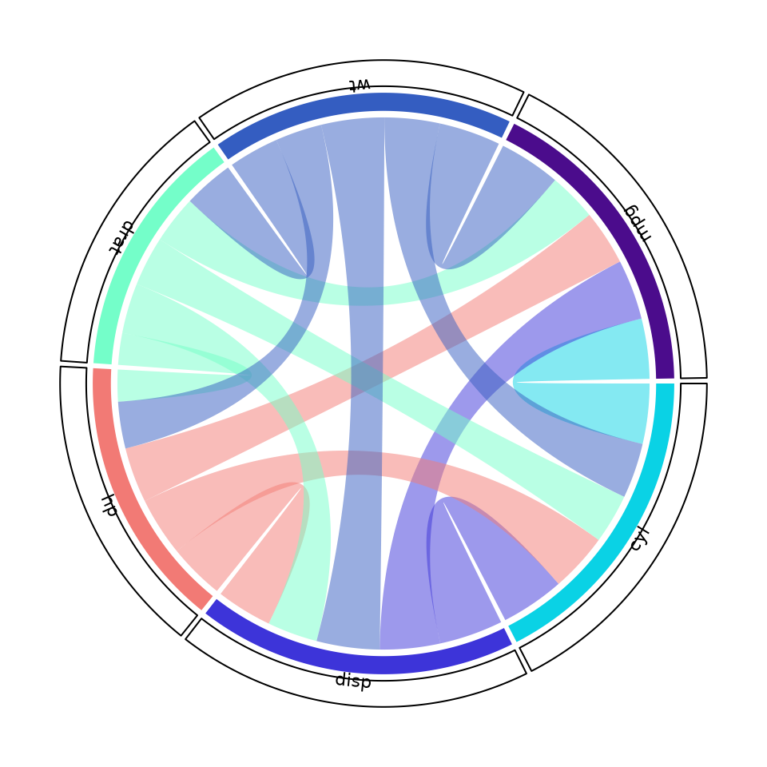
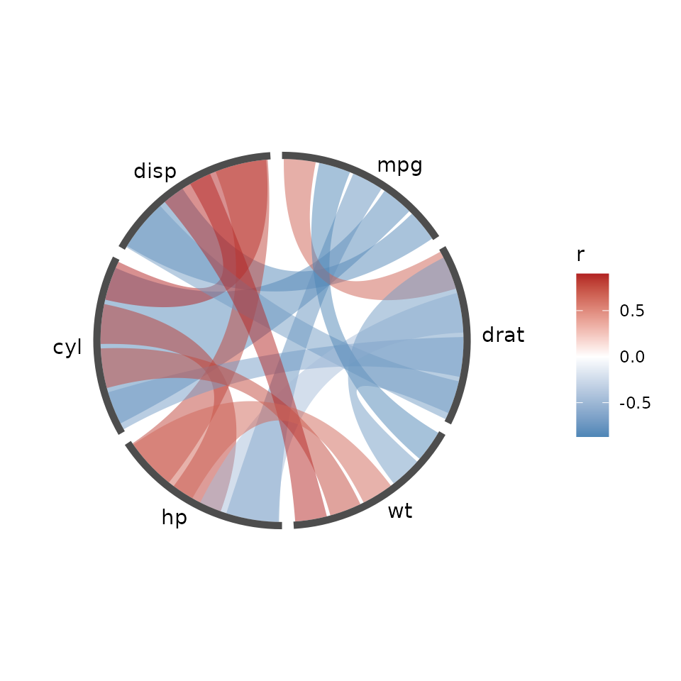
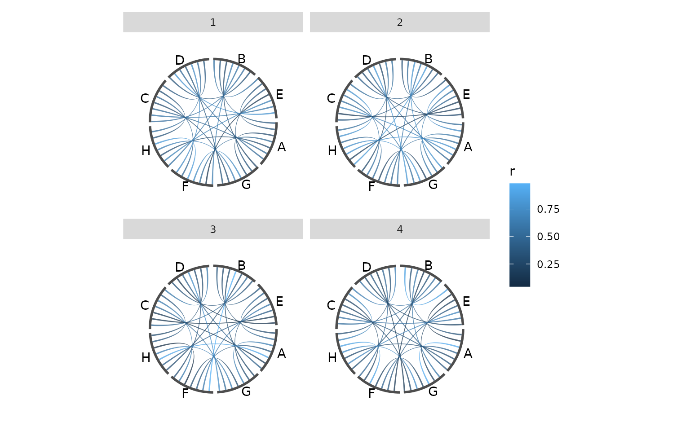
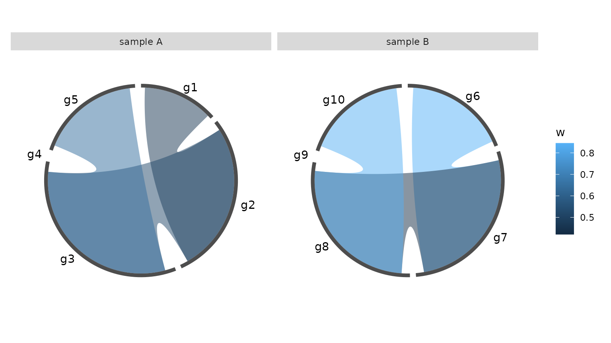
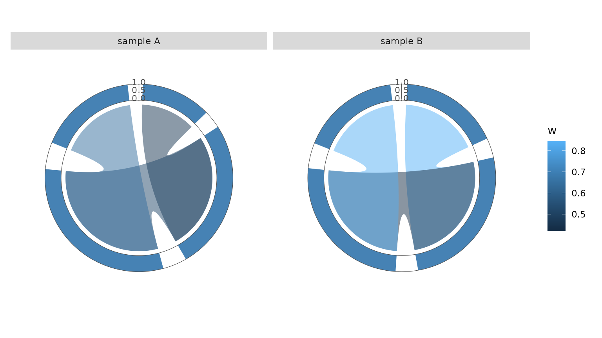
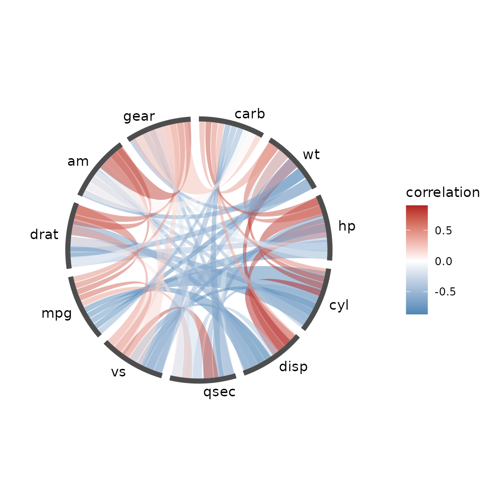
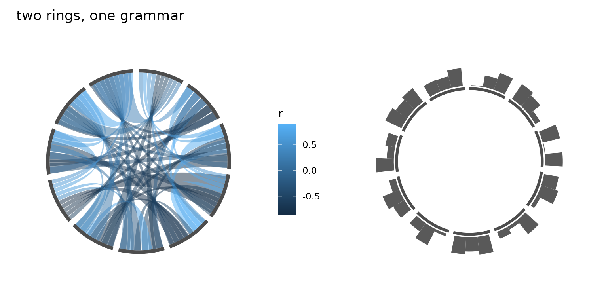
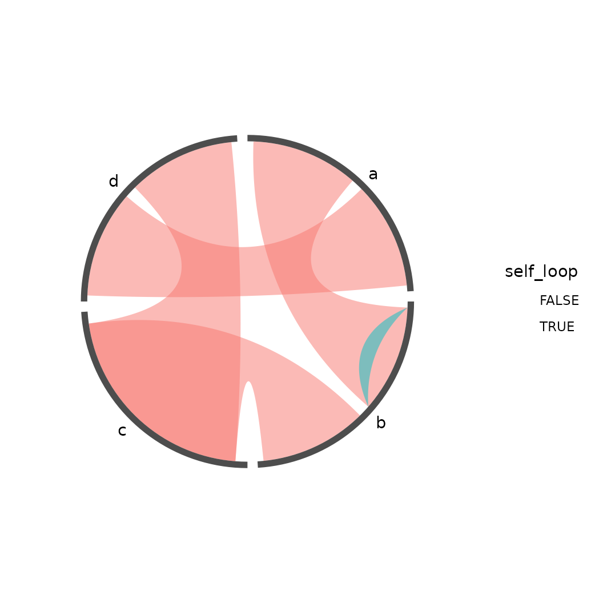
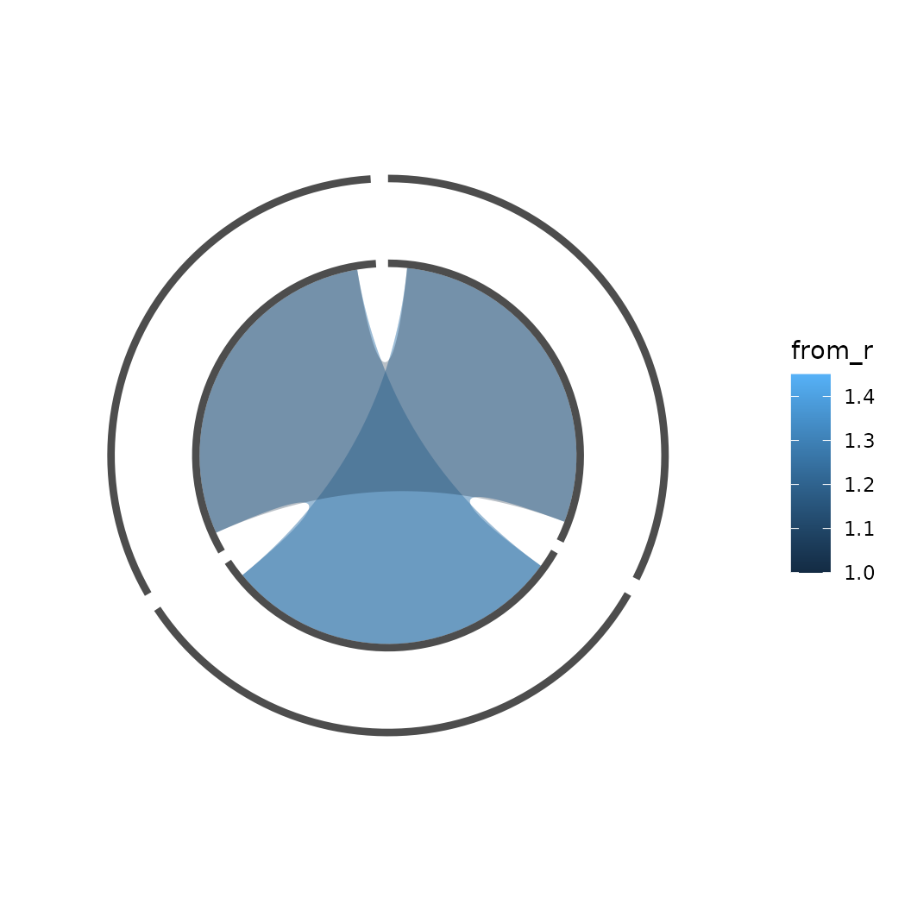

knitr::opts_chunk$set(echo = TRUE, collapse = TRUE, comment = "#>")
library(ggcircos)
library(ggplot2)
set.seed(42)The honest framing
circlize is the most capable circular-plotting package in R. It has more geometry types, more options, and a decade of accumulated edge-case handling. If you need a ideogram with cytogenetic bands, use circlize.
ggcircos exists for the things circlize structurally cannot do.
circlize paints into its own canvas: the figure is a side effect of a
sequence of drawing calls, not an object. So you cannot facet a circlize
figure, you cannot drive its colours with a ggplot2 scale
and get a legend, you cannot compose two of them with patchwork, and you
cannot save one and add a layer next week. ggcircos keeps the circular
layout but hands the drawing back to ggplot2, because the layout is just
a table of angles.
This vignette maps the API and shows the three things you can do here and cannot do there.
The same picture, two ways
mat <- round(cor(mtcars)[1:6, 1:6], 2)
circlize::chordDiagram(as.matrix(mat), symmetric = TRUE,
diffHeight = 0.02,
annotationTrack = "grid",
preAllocateTracks = list(list(track.height = 0.08)))
# the labels live in the annotation track's panel function, querying the
# canvas for each cell's position -- this is the part with no ggplot2 analogue
circlize::circos.trackPlotRegion(track.index = 1, panel.fun = function(x, y) {
xlim <- circlize::get.cell.meta.data("xlim")
circlize::circos.text(mean(xlim), 0.04,
circlize::get.cell.meta.data("sector.index"),
cex = 0.7, facing = "outside")
})
circlize: the same 6x6 correlation matrix.
p <- ggcircos(mat, order = "hclust") +
geom_chord(aes(fill = r)) +
scale_fill_gradient2(low = "steelblue", mid = "white", high = "firebrick",
midpoint = 0, name = "r") +
geom_node_arc() +
geom_node_text()
print(p)
ggcircos: the same matrix, with the legend for free.
The circlize call is one line; the labels are two more, because circlize draws them through a panel function that queries its own canvas. The ggcircos call is the layout plus four layers, and the legend came free.
The API map
| circlize | ggcircos | note |
|---|---|---|
chordDiagram(mat) |
ggcircos(mat) + geom_chord() |
matrix input is native |
chordDiagramFromDataframe(df) |
ggcircos(df, nodes = , sectors = ) |
a link table is the general form |
circos.initialize(factors = ) |
sectors = "col" |
a sector is a group of nodes |
circos.track(...) |
ggcircos(tracks = c(...)) + geom_track(...) |
bands are declared up front |
circos.text(...) |
geom_node_text() /
geom_track(geom = "text")
|
|
circos.axis(...) |
geom_track_axis(band = , limits = ) |
limits is required |
circos.link(...) |
geom_chord(type = "line") |
|
circos.par(...) |
theme_circos() + layer arguments |
there is no global state |
get.cell.meta.data(...) |
layout_nodes() / layout_links()
|
the canvas query became a table |
circos.genomicTrack(df) |
geom_track(aes(xmin = start, xmax = end), domain = len) |
a feature is a range, not a point |
circos.genomicRect(...) |
geom_track(geom = "tile") with
xmin/xmax
|
no separate geom needed |
circos.genomicAxis(...) |
geom_track_axis(limits = c(0, chr_length)) |
numeric ticks, not chr1:1,000 labels |
| a threshold line | geom_track_hline(band = , value = ) |
value is a track value, not an angle |
circos.nested(...) |
not supported | compose two plots instead (see below) |
Three translation rules cover most of the rest. circlize’s global
state (circos.par, the current track index) becomes
explicit arguments on the layer that uses them. circlize’s
track.height becomes a named width in
tracks = c(name = width), because the bands must be
declared before any layer can refer to them. And circlize’s per-call
xlim/ylim on a genomicTrack()
becomes the domain/origin pair:
domain names the node column holding each chromosome’s
length, so a 100 Mb chromosome and a 5 Mb contig each fill their own arc
instead of being forced onto one scale.
Two entries deserve a word. circos.genomicAxis() labels
a chromosome in chr1:1,000,000 form;
geom_track_axis() is a plain numeric ruler, so you give it
limits = c(0, 4000) and read the numbers as base pairs –
turning that into ideogram-style tick text is not something this package
does yet. And circos.nested() draws one circle inside
another sharing a common sector; here the two are separate plots, which
is the point of the model: put them side by side with
patchwork, or facet one plot by group.
What only ggcircos can do
Facets
facet_wrap() has two meanings here, and which one you
get depends on whether you pass by =.
Shared ring (the default). Four samples of the same eight variables become four panels that share one node ring – the chords split per sample, the ring does not. This is circlize’s four canvases made one call, but every panel keeps the same node order.
mk <- function(s) {
m <- matrix(runif(8 * 8), 8, 8)
m <- (m + t(m)) / 2
diag(m) <- 0
d <- as.data.frame(as.table(m))
names(d) <- c("from", "to", "r")
d$sample <- s
d
}
links <- do.call(rbind, lapply(1:4, mk))
p_facet <- ggcircos(links, order = "hclust") +
geom_chord(aes(fill = r)) +
geom_node_arc() +
geom_node_text() +
facet_wrap(~ sample)
#> ℹ Dropped 32 self-links (`from == to`); use `self_loops = TRUE`
#> to draw them.
print(p_facet)
Shared ring: the chords split per sample; every panel draws the same node ring in the same order.
The build proves the structure: one data frame per layer,
each carrying a PANEL column — not one drawing per
panel.
b <- ggplot_build(p_facet)
c(panels = length(unique(b$layout$layout$PANEL)),
layers = length(b$data),
rows_per_layer = vapply(b$data, nrow, integer(1)))
#> panels layers rows_per_layer1 rows_per_layer2 rows_per_layer3
#> 4 3 224 32 32One ring per group (by =). When each
panel should have its own nodes and its own ordering,
name a node-table column with by =. The layout is then
built once per group. Here the samples do not even share nodes.
set.seed(1)
nodes <- data.frame(
id = paste0("g", 1:10),
grp = rep(c("sample A", "sample B"), each = 5),
stringsAsFactors = FALSE
)
links <- data.frame(
from = c("g1", "g2", "g3", "g6", "g7", "g8"),
to = c("g2", "g3", "g5", "g7", "g8", "g10"),
grp = rep(c("sample A", "sample B"), each = 3),
w = runif(6, 0.3, 0.9),
stringsAsFactors = FALSE
)
ggcircos(links, nodes = nodes, by = "grp", weight = "w") +
geom_chord(aes(fill = w)) +
geom_node_arc() +
geom_node_text() +
facet_wrap(~ grp)
One ring per sample: each panel has its own node set and its own layout, from a single ggcircos(by = ) call.
A link belongs to the panel named in its own grp column;
a node id may repeat across groups, since each panel is laid out
independently. Without a link column, a link is filed under the group of
its two ends, and one that spans groups is dropped.
Tracks work too, and each panel places its own: a row is put at the angle its group gives that node, so the same id can sit in a different place in different rings. The track data therefore needs the grouping column as well.
trk <- data.frame(
id = c(paste0("g", 1:5), paste0("g", 6:10)),
grp = rep(c("sample A", "sample B"), each = 5),
gc = runif(10, 0.25, 0.75),
stringsAsFactors = FALSE
)
ggcircos(links, nodes = nodes, by = "grp", weight = "w",
tracks = c(gc = 0.22)) +
geom_chord(aes(fill = w)) +
geom_track(data = trk, aes(x = gc), node = id, band = "gc",
fill = "steelblue", colour = NA) +
geom_track_axis(band = "gc", limits = c(0, 1)) +
facet_wrap(~ grp)
Tracks on a by = plot: each panel places its own track, and the axis stands before that panel’s first node.
Scales and legends
The fill of a ribbon is a mapped aesthetic, so the whole ggplot2
scale system applies — including legends, guides, and
scale_*_manual():
ggcircos(cor(mtcars), order = "hclust") +
geom_chord(aes(fill = r)) +
scale_fill_gradient2(low = "steelblue", mid = "white", high = "firebrick",
midpoint = 0, name = "correlation") +
geom_node_arc() + geom_node_text()
A diverging scale drives the ribbons and the legend.
Composition
A ggcircos plot is a grob like any other, so it composes:
p_a <- ggcircos(cor(mtcars), order = "hclust") +
geom_chord(aes(fill = r)) + geom_node_arc() + theme_circos()
vals <- data.frame(id = rep(colnames(mtcars), each = 3),
value = runif(33))
p_b <- ggcircos(cor(mtcars), order = "hclust", tracks = c(v = 0.25)) +
geom_track(data = vals, aes(x = value), node = id, band = "v") +
geom_node_arc() + theme_circos()
p_a + p_b + patchwork::plot_annotation(title = "two rings, one grammar")
A chord diagram and a track diagram side by side.
Self-loops
circlize draws a self-link as a small loop folded toward
the centre. The same is available here: pass
self_loops = TRUE and a from == to row becomes
a loop on its own node, rather than being dropped. Like circlize’s, it
folds inward instead of running the full way round – a full turn would
sit on top of the node and stop reading as a link.
nodes <- data.frame(id = c("a", "b", "c", "d"), stringsAsFactors = FALSE)
links <- data.frame(
from = c("a", "b", "b", "c", "a"),
to = c("b", "b", "c", "d", "d"),
stringsAsFactors = FALSE
)
ggcircos(links, nodes = nodes, self_loops = TRUE) +
geom_chord(aes(fill = self_loop)) +
geom_node_arc() +
geom_node_text()
A self-loop on node b, drawn as a loop folded toward the centre. The other links are ordinary chords.
loop_depth (default 0.5) says how far the
loop folds toward the centre: 0 would not fold at all,
1 would reach it. A narrow node gets a shallow loop
automatically, so several self-loops on a crowded ring do not pile into
the middle.
One node, several radii
Sometimes the same entity belongs on the ring more than once – a
protein in two interaction networks, a feature present in two
assemblies. The nodes table may list an id several times,
once per radius, and the r column says which. The layers
are stacked above one another on the same place of the ring, and each
keeps its own links.
nodes <- data.frame(
id = c("a", "a", "b", "b", "c", "c"),
r = c(1, 1.45, 1, 1.45, 1, 1.45),
stringsAsFactors = FALSE
)
links <- data.frame(
from = c("a", "a", "b", "b", "c"),
to = c("b", "b", "c", "c", "a"),
from_r = c(1, 1.45, 1, 1.45, 1),
to_r = c(1, 1.45, 1, 1.45, 1.45),
stringsAsFactors = FALSE
)
ggcircos(links, nodes = nodes) +
geom_chord(aes(fill = from_r), alpha = 0.3) +
geom_node_arc()
One node id at two radii: the inner ring and the outer ring are the same node, with their own links.
The inner and the outer ring are the same three nodes, one layer each: the layers share their place on the ring and stack outwards, and each keeps its own links. The chords are drawn translucent here so both layers stay visible.
A link says which layer it lives on with from_r /
to_r. A link whose end does not name a radius is an error
when the node has several layers – the package lists the radii rather
than picking one.
What ggcircos does not do yet
- Self-loops (
from == to) are drawn only withself_loops = TRUE; by default they are dropped with a message. - No label collision avoidance; rotate labels or shorten them.
- No track type beyond
col,bar,area,boxplot,violin,density,point,tile,text. - No angular axis (the circle has no “hours” scale).
- No ideogram / cytogenetic band knowledge — circlize ships the data, we do not.
- No interactive output.
plotly::ggplotly()will not crash on a ggcircos plot, but it will not render the chords either. - A continuous fill is quantised into batches of at most 8/255 colour steps to keep the grob count low.
These are choices, not oversights: the package is one grammar, not a feature race.
If you are coming from circlize
- Replace
chordDiagram(mat)withggcircos(mat) + geom_chord()and addgeom_node_arc()/geom_node_text()— the annotation ring is a layer now, not a side effect. - Move each
circos.track()intogeom_track(), and declare its band inggcircos(tracks = c(name = width))first. - Keep the sector concept:
circos.initialize(factors = )becomesnodes =plussectors = "col". - Expect to set
limitsyourself ongeom_track_axis(); ggcircos will not guess the range of another layer’s data. - Then try the thing you could not do before:
facet_wrap(~ sample).